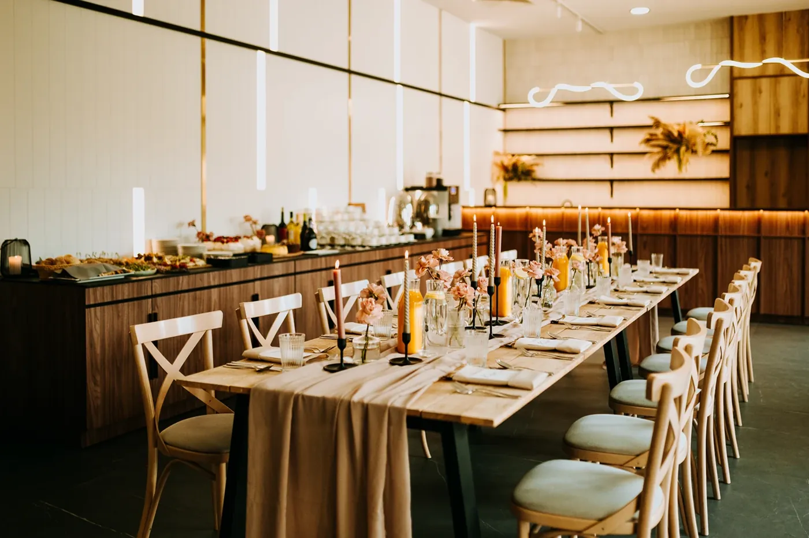
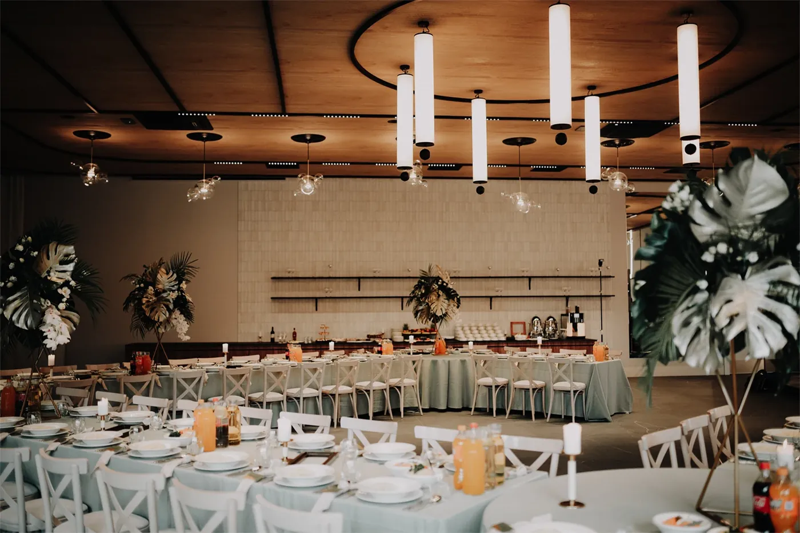

Karty Realizacji
- dla managera, personelu i usługodawców
- harmonogram, liczby gości i rozsadzenie
- u managera i personelu też menu i obsada
BIFOR porządkuje cały proces organizacji wydarzenia. Sala, Zamawiający i zaproszone osoby pracują na jednej aktualnej wersji ustaleń: od rezerwacji terminu aż do dnia przyjęcia.
Utwórz wydarzenie. Termin trzymasz wstępną rezerwacją. Gdy zamawiający się zdecyduje, zamieniasz ją w wydarzenie.
Prawdziwe ekrany programu na przykładowych danych.
E-maile, wiadomości, Excel, dokumenty i notatki często zawierają różne wersje informacji dotyczących tego samego wydarzenia. BIFOR zbiera je w jednym miejscu.
Jedno wydarzenie. Jedna aktualna wersja ustaleń.
Każda część korzysta z tego, co już wpisane w pozostałych. Lista gości zasila wycenę, rozsadzenie i Karty Realizacji.
Cały miesiąc sali na jednym ekranie. Termin trzymasz wstępną rezerwacją, a program ostrzega o kolizjach.
Pytania o dekoracje, tort czy muzykę w sekcjach z terminami. Zamawiający odpowiada sam, Ty zatwierdzasz.
Goście odpowiadają przez link, bez zakładania konta. Sadzacie ich na planie Twojej sali.
Pakiety z ceną za osobę i cennik atrakcji. Wycena liczy się z menu i listy gości.
Harmonogram z zaakceptowanej wyceny. Zamawiający zgłasza przelew, Ty potwierdzasz wpłatę.
Umowy i pliki przy przyjęciu. Karty Realizacji dla managera, personelu i usługodawców.
Widzisz, którym przyjęciom brakuje ludzi. Pracownicy sami zgłaszają się na wolne zmiany.
Zamawiający ma swoje wydarzenie na komputerze i w telefonie, bez instalowania czegokolwiek.
A także: przypomnienia e-mailem i SMS-em, historia zmian, import wydarzeń z Excela i kalendarza, menu z pliku Word oraz druki: plan rozsadzenia, winietki i tablica przy wejściu.
Rozpocznij z BIFOR →BIFOR wykorzystuje te same dane wszędzie tam, gdzie są potrzebne. Gdy zmienia się liczba gości, program przelicza to, co może, i pokazuje, co czeka na Twoją decyzję.
Mniej przepisywania. Mniej błędów.
Jedna aktualna wersja danych.
Zmień liczbę gości i zobacz, co się dzieje.
Każdy widzi to, czego potrzebuje. Wszyscy pracują na tych samych danych.
Z ustaleń powstają dane, których zespół sali potrzebuje w dniu przyjęcia. Nikt nie przepisuje ich na kartki.


BIFOR powstał na podstawie wieloletniego doświadczenia w organizacji wesel i przyjęć. Funkcje systemu wynikają z rzeczywistych procesów związanych z obsługą klienta, przygotowaniem wydarzenia i jego realizacją.
Prowadzi BIFOR
Z Restauracją Avocado związany od jej początku. Zaczynał w zespole kelnerskim, potem został managerem sali bankietowej. Koordynował zespół i dbał o każdy szczegół wesel i przyjęć.
Współwłaściciel Restauracji Avocado
Razem z Eweliną stworzył Avocado: miejsce, jakiego sami szukali na własne przyjęcie. BIFOR wyrósł z tego, czego nauczyło ich prowadzenie sali.
O programie opowie Ci ktoś, kto zna tę pracę od środka.
Rozpocznij z BIFOR
Wesela · osiemnastki · urodziny · komunie · chrzciny · imprezy firmowe
Nie ma tu Twojego pytania? Napisz do nas w formularzu — odpowiemy.
Przejdź do formularza →BIFOR to oprogramowanie, które porządkuje cały proces ustaleń dotyczących wydarzenia w jednym miejscu.
Nie. Korzystają z niego sale, restauracje i obiekty, które przyjmują wesela, osiemnastki, urodziny, komunie, chrzciny i imprezy firmowe.
Nie. BIFOR działa w przeglądarce, na komputerze i na telefonie.
Tak. Zapraszasz go e-mailem do konkretnego wydarzenia. Ma je na komputerze i w telefonie.
Nie. Odpowiadają przez link z e-maila albo SMS-a.
Tak. DJ, fotograf czy dekorator widzi swoje pytania, swoje punkty dnia i swoją Kartę Realizacji. Listy gości i pieniędzy nie widzi.
Nie. Pieniądze trafiają bezpośrednio na konto sali, a BIFOR nie pośredniczy w płatnościach.
Przeniesiesz je importem. Przed zapisem widzisz każdy wiersz. Menu wczytasz z pliku Word.
Cenę ustalamy po krótkiej rozmowie o Twojej sali.
Wypełnij formularz „Rozpocznij z BIFOR”. Skontaktujemy się w sprawie uruchomienia konta.
Prześlij podstawowe informacje. Skontaktujemy się z Tobą i przedstawimy sposób uruchomienia BIFOR w Twojej organizacji.